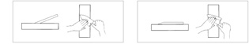
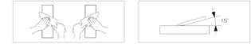

TIPPS FOR CARE AND USE
Your high-quality knives need a certain amount of care to make sure that you can enjoy the knife and its sharpness for a long time.
* Prior to using your knives for the first time they need to be rinsed once under hot water.
* After each use rinse and clean the knife thoroughly with a soft cloth. Don't use aggressive detergent. To avoid injuries always dry the knife from the back of the blade towards the edge.
* Aggressive foodstuff like lemon juice should be washed off directly after use.
* Never clean the knives in a dishwasher. This will not only affect the material but also the edge's sharpness.
* Never use glass or granite cutting surfaces. They may be easy to clean but will ruin even the hardest edge. The recommended cutting surfaces are wood (preferably hardwood) or medium-dense synthetic boards.
* Don't soak knives with handles of natural wood for too long. Apply a little neutral vegetable oil from time to time.
* To refresh the shiny appearance of the Wasabi edge we recommend vegetable oil or our special neutral silicone oil.
* When storing a knife please make sure that the edge never comes into contact with other metallic objects. This is to avoid damages to the edge. Keep the knives either in a knife block, a drawer insert or the wood covers for the Japanese blades.

Taking care of a ceramic knife.
* With the right care, ceramic knife preserves its excellent quality for years without sharpening.
* Wash it by hand in warm water with soft powder or without it.
* Do not drop the knife because its' ceramic blade's fragile and can break.
* Do not use it as a tool.
* Don't wash ceramic knife in a dishwashing machine
* Keep it in a block of knives or other safe, convenient place.
* Do not sharpen ceramic knife yourself.
* Do not put any abrasive powders and other substances on a ceramic blade.
RE-SHARPENING
Prior to using the wet stone it should be completely soaked in water for about 5 to 10 minutes.
Please make sure that the stone is always slightly wet during the sharpening process.


When sharpening single-edged knives the ground side should be treated first.
Make sure that you maintain the original angle given by KAI. If at all possible apply an angle of
45° (to achieve the best possible surface). Grind towards the edge using pressure; release the pressure on the way back.
Apply as often as necessary to achieve the desired degree of sharpness. Once finished on this side, turn the blade over and
start on the other side but only approx. 1/10th as often as before.
Double-edged knives need the same treatment but with an angle of 15°. Both sides need to be ground evenly to restore the symmetrically
ground edge.